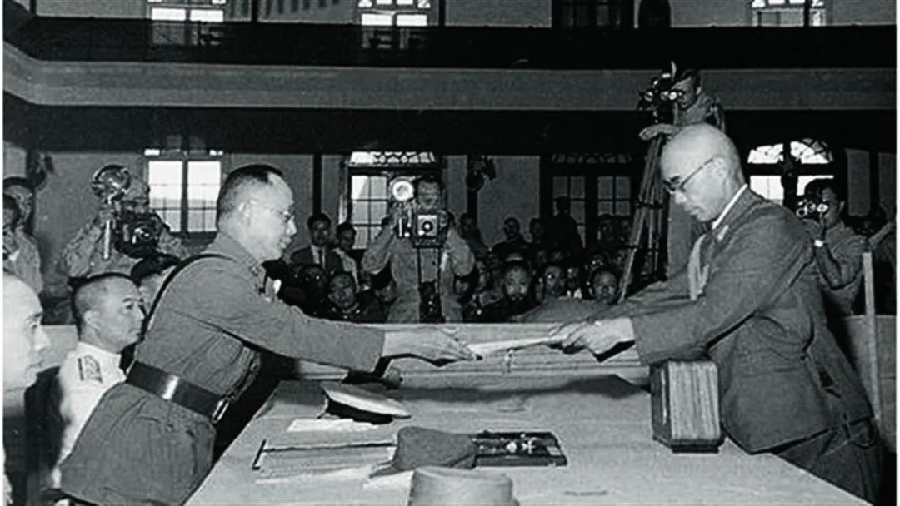

1931年9月18日，日军发动九一八事变，由于国民党政府执行“攘外必先安内”的错误方针，采取“不抵抗”政策，东北迅速沦陷，标志着十四年抗战正式开始。
卢沟桥事变：1937年7月7日卢沟桥事变爆发，中日全面开战。抗日民族统一战线正式形成，中国掀起了全民族抗战的高潮。
淞沪会战：1937年8月13日淞沪会战爆发，淞沪会战是中国抗日战争中首场大型会战，也是规模最大、战斗最激烈之战役。
南京失守：1937年12月13日，南京失守，侵华日军发动了震惊中外的南京大屠杀，遇难同胞超过30万。
台儿庄大捷：1938年3月16日至4月15日，经过一个月的激战，中方伤亡约5万余人，毙伤日军约2万余人，台儿庄大捷沉重打击了日本侵略者的嚣张气焰，坚定了全国军民坚持抗战的信心。这次战役极大地鼓舞了全民族士气，歼灭了日军大量有生力量，是抗日战争以来取得的最大胜利。
武汉会战：1938年6月至10月，是抗日战争战略防御阶段规模最大、时间最长、歼敌最多的一次战役 ，大大消耗了日军的有生力量，此后中国抗日战争进入战略相持阶段。
1941年12月24日至1942年1月16日，第三次长沙会战中方成功守住长沙，这也是太平洋战争开战以来同盟国取得的首次胜利，极大提升了中国的国际影响力，也迫使美英等国自动放弃自1840年鸦片战争以来在中国取得的各种治外法权。
湘西会战 ：1945年4月9日至6月7日，湘西会战是中国抗日战争中最后一场会战，日军从此逐步收缩战线，湘西会战的胜利标志中国抗日正面战场由防御转入反攻阶段。

1945年8月15日在中国军民和苏美盟国共同打击下，日本宣布无条件投降。9月2日日本外务大臣重光葵在停泊于东京湾的密苏里号战列舰上代表日本政府签署《降伏文书》，标志着第二次世界大战正式结束。